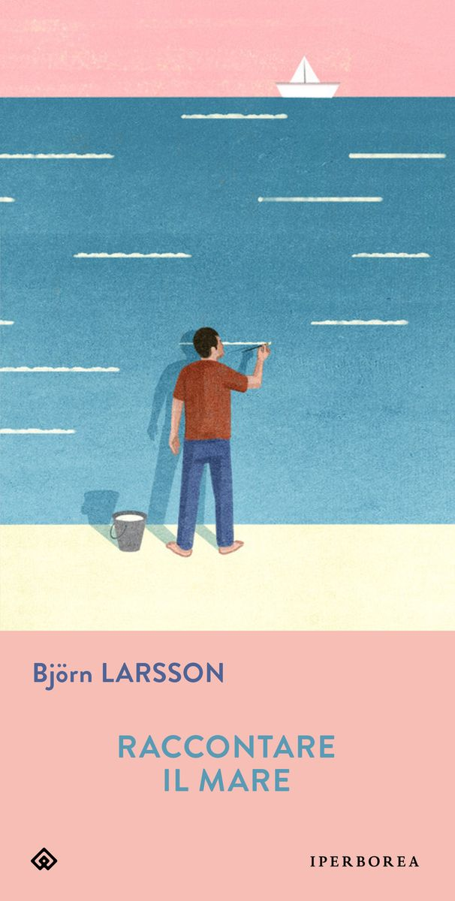

11:21 · 4 OPERE
Salus ex Judaeis est.
Il filo del discorso
Il video affronta l’antisemitismo e il rapporto fra giudizio storico, responsabilità politica e discorso pubblico. Dr Divago prende avvio da un passaggio di Raccontare il mare di Björn Larsson e da una citazione di Luis Sepúlveda, quindi contesta il modo in cui alcuni scrittori e ambienti universitari discutono Israele e i palestinesi. Gli esempi accademici e l’audizione dei vertici universitari statunitensi conducono a una critica delle istituzioni culturali. La vicenda del libro Denying the Holocaust e della causa intentata da David Irving introduce il problema della manipolazione delle fonti e della distinzione fra ricerca e negazionismo. Nella conclusione il relatore torna all’attualità mediorientale e richiama Genesi e Numeri. Le tesi sul conflitto e i giudizi sugli autori citati rimangono posizioni del relatore.
I libri nel discorso

Raccontare il mare
Copertina: Iperborea · Gli Iperborei 244 · opera del 2015 · grafica attuale dell’editore
Immagine autentica dell’opera, controllata visivamente; l’edizione di riferimento non è attribuita al filmato.
Björn Larsson, Raccontare il mare e il 2015 sono annunciati.
Passaggio 1:44 ↗ · Fonti e libro ↗Denying the Holocaust. The Growing Assault on Truth and Memory
Identificazione probabile
Copertina: Penguin · riedizione 2016
Immagine autentica dell’opera, controllata visivamente; l’edizione di riferimento non è attribuita al filmato.
Titolo inglese alterato nell’ASR, anno 1993 e causa Irving contro Penguin e autrice: associazione a Lipstadt probabile.
Passaggio 7:52 ↗ · Fonti e libro ↗
Genesi
Copertina: Einaudi, I libri della Bibbia / Einaudi Tascabili, 2000; introduzione di Steven Rose
Copertina dell’edizione autonoma Genesi, nella serie I libri della Bibbia, con introduzione di Steven Rose. Edizione scelta come riferimento iconografico; nessuna edizione è confermata nel video.
Genesi è nominata prima della formula di benedizione e maledizione, riconducibile a 12,3.
Passaggio 10:51 ↗ · Fonti e libro ↗
Numeri
Copertina della Bibbia che comprende Numeri: San Paolo, 2014 · Nuova Versione dai Testi Antichi · edizione di riferimento
Copertina autentica del volume biblico completo, già presente in biblioteca. La voce riguarda il singolo libro dei Numeri; l’immagine non è una sua edizione autonoma e non indica la traduzione citata nel video.
Numeri è nominato nella conclusione e la formula trova riscontro in 24,9.
Passaggio 11:00 ↗ · Fonti e libro ↗Minutaggi ricavati da testi automatici, da riascoltare. Le identificazioni probabili sono segnalate accanto ai libri.